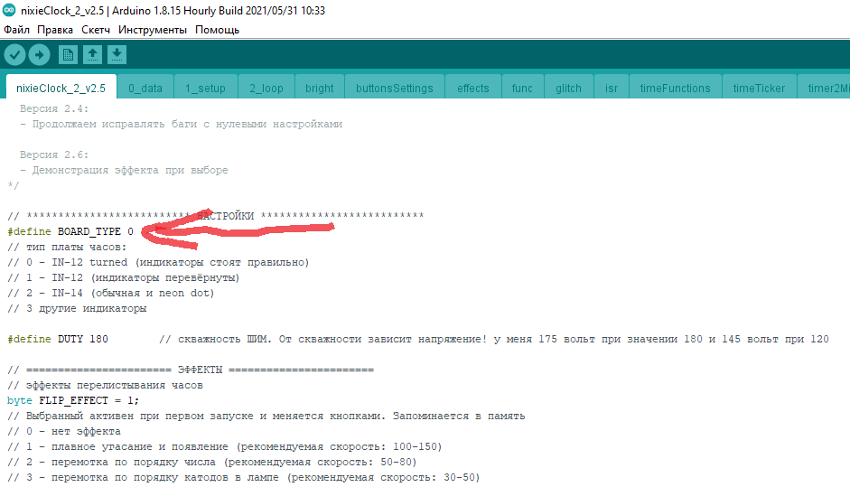

Список деталей и ссылки на них для заказа. Если какие-то ссылки не работают, то поищите аналогичное у других продавцов.
Плата универсальная. Она разведена под ИН-12 и ИН-14 одновременно. Нужно запаять 4 лампы одного из типов. То есть берёте плату и впаиваете либо 12 либо 14 лампы. Потом в прошивке укажете номер соответствующих ламп.
В EasyEda есть проект этой платы. Можно там подсмотреть расположение деталей и их номиналы. Там же можно сгенерировать gerber-файлы для заказа у китайцев печатных плат.
Ниже выкладываю ссылку на архив с уже сгенерированными герберами. Можно этот архив загружать для заказа печататных плат у китайцев.
Скачать архив с прошивками zip - скачать.
Прошивки находятся в скачанном архиве в папке firmware:
- lamp_test – прошивка для теста ламп, перебирает цифры на лампах по очереди (сначала 0–9 на первой, потом на второй…), пауза перебора задаётся в самом начале скетча
- nixieClock_2_test_v1.1 – “минимальная” прошивка чисто для работы с лампами, на её основе можно написать свои часы. В сыром виде прошивка перебирает по очереди цифры на всех лампах одновременно
- nixieClock_2_v2.5 – основная прошивка часов, со всеми эффектами, временем.
В самом начале кода находятся настройки. Самая важная для вас – выбор типа платы, по умолчанию выбрана плата под ИН-12. Для ИН-14 нужно сменить цифру с нуля на 2, получится BOARD_TYPE 2.
Есть ещё другие настройки. Менять их следует осторожно. Можно после каждого изменения прошивать часы и убеждаться в работоспособности.

Последовательность сборки и настройки. Подробности по каждому пункту читай ниже.
- Полностью собрать нижнюю плату (можно не паять DS3231).
- Отмыть флюс! Зубной щёткой и спиртом/калошей, или на худой конец горячей водой.
- Выставить подстоечный резистор напряжения в среднее положение.
- Загрузить прошивку lamp_test, выбрав тип платы (читай код в самом начале).
- Должен начать работать высоковольтный генератор. Напряжение может подниматься до 350 вольт. Аккуратно. Высокое напряжение.
- Измеряем напряжение на конденсаторе в верхнем левом углу платы (мультиметр ставить в режим DC, напряжение 50-300 Вольт). Переменным резистором выставляем напряжение в районе 180-200 вольт
- На данном этапе можно и нужно проверить лампы, подключив анод (белая нога) через резистор 10 кОм на “плюс” конденсатора, и любую другую ногу на “минус” конденсатора. Перебирая ноги минусовым проводом проверить все цифры индикатора. Если цифра горит не полностью, можно повысить напряжение и “прожечь” катод, или просто подождать. Лампы старые, могут начать нормально работать не сразу. ВНИМАНИЕ! Цифра (катод) в плохом “старом” состоянии потребляет бОльший ток, что может приводить к падению напряжения на генераторе и заветных 180В в работе вы не получите. Поэтому рекомендуется прокалить лампы от генератора в ручном режиме, как написано в начале этой строчки.
- Далее можно смело паять лампы на верхнюю плату.
- Обязательно отмыть флюс!
- Соединяем верхнюю и нижнюю платы.
- На прошивке lamp_test будут последовательно перебираться цифры на лампах на максимальной яркости, в порт будет выводиться текущая цифра. Снова берём отвёртку и подстраиваем генератор на 180-200 Вольт (предыдущая настройка была нужна для первого пуска ламп, чтобы ничего не сгорело. При подключении ламп напряжение просядет, и его нужно будет выкрутить обратно).
- Есть смысл оставить часы поработать на этой прошивке пару часов, чтобы лампы пришли в себя, т.к. каждый индикатор перебирает все цифры на максимальной яркости без динамической индикации.
- Если всё нормально – прошиваем актуальную прошивку часов nixieClock_2_v2.5 и наслаждаемся!
Подробное видео с последовательной сборкой и настройкой.